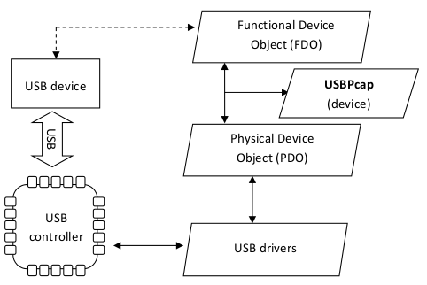
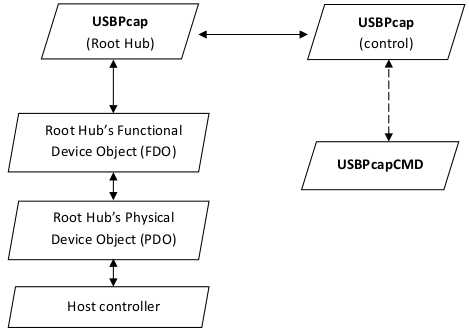

USBPcapDriver block diagram
USBPcapDriver has three "hats":
- Root Hub (USBPCAP_MAGIC_ROOTHUB
- Control (USBPCAP_MAGIC_CONTROL)
- Device (USBPCAP_MAGIC_DEVICE)
Figure 1: USBPcap (driver) in the USB stack.

Figure 2: USBPcap (control) and USBPcap (Root Hub) in USB stack. This is closer look at the USB devices from Figure 1.

{kind=link}
{kind=link}
USBPcap (Root Hub)
In AddDevice function, which gets called every time new device of GUID {36FC9E60-C465-11CF-8056-444553540000} shows at the system, USBPcap checks if device has hardware ID USB\ROOT_HUB or USB\ROOT_HUB20. If hardware ID matches then USBPcap (Root Hub) object gets created and attaches itself onto the USB stack as Upper Filter.
For every USBPcap (Root Hub) instance there is one USBPcap (control). USBPcap (Root Hub) is responsible for allocating/freeing the capture buffer and tracking devices connected directly to associated root hub.
USBPcap (control)
USBPcap (control) creates \\.\USBPcapX (where X is natural number) named device that can be used by user-mode application (such as USBPcapCMD) to read captured data from buffer.
\\.\USBPcapX accepts following IOCTLs:
- IOCTL_USBPCAP_SETUP_BUFFER
Parameter: UINT32 size. This IOCTL sets capture buffer size for associated Root Hub. Minimum buffer size is 4096 (4 KiB), maximum 134217728 (128 MiB). This IOCTL may fail if there is not enough free NonPaged Memory to allocate buffer or if there is more unread data than new buffer size. - IOCTL_USBPCAP_START_FILTERING
- IOCTL_USBPCAP_STOP_FILTERING
- IOCTL_USBPCAP_GET_HUB_SYMLINK
This IOCTL returns named device object name of associated Root Hub. USBPcapCMD uses this name for printing USB devices monitored on given USB bus. - IOCTL_USBPCAP_SET_SNAPLEN_SIZE
Parameter: UINT32 size. This IOCTL sets the snaplen field of pcap file.
Reading from \\.\USBPcapX returns subsequent data of pcap file containing captured packets. Writing is prohibited.
USBPcap (device)
USBPcap (Root Hub) creates instances of USBPcap (device). USBPcap (device) works as Lower Filter on the USB device stack. It captures USB data from URBs (located in I/O Request Packets) passed between FDO and PDO. If device is USB hub, then it also tracks the devices connected to it and creates USBPcap (device) instances for every new device connected to it. USBPcap (device) keeps track of Pipe Handle descriptions in endpoint table.